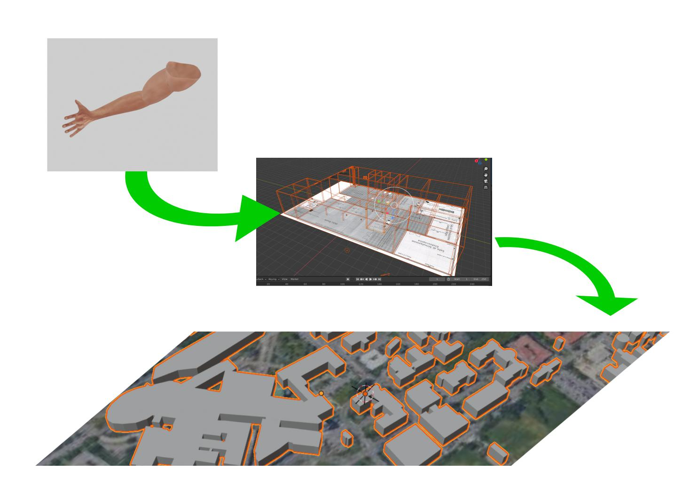

class: center, middle # Presentazione SIMHUB <br> PROGETTO DI SIMULAZIONE VIRTUALE <br> IN AMBITO MEDICO-CHIRURGICO Federico Monaco Ph.D. TRESEIZERO VIRTUAL LAB Dipartimento di Medicina e Chirurgia  --- # IN BREVE Il progetto SIMHUB prevede l'integrazione in digitale di risorse e attività di cui gli utenti in formazione possono fare esperienza con percorsi, materiali e pratiche reali presenti presso il SIM.LAB basandosi su un approccio intuitivo e di scoperta dell'apprendimento utilizzando i propri dispositivi da remoto e in presenza per accedere alle simulazioni virtuali. <iframe src="https://www.theasys.io/viewer/nbBzx3uQNsnDQZlpBpm7xgfeNxnCLd" allowfullscreen="true" frameborder="0" scrolling="no" allow="vr;gyroscope;accelerometer" width="745" height="400" style="border:none;"></iframe> --- # GLI OBIETTIVI DEL PROGETTO 1) Utilizzo di risorse digitali aperte (dotate ovvero di una licenza di uso, riutilizzo e modifica libera) e un approccio di ricerca alla simulazione permetteranno a docenti e formatori di modellare i percorsi e gli elementi presenti nei kit di simulazione a bassa fedeltà che saranno disponibili per la piattaforma MOODLE. <br> 2) Lo sviluppo di elementi, ambienti e mappe permetterà non solo la navigazione e l'esecuzione di esercizi e soluzione di problemi in scenari, ma anche di raccolta e diffusione di dati utili a ricerca e impatto della qualità con ricadute di buone pratiche anche sul territorio. <br> 3) Soluzioni ad hoc in realtà virtuale e aumentata vengono sviluppate e testate presso il Virtual Lab TRESEIZERO del SIM.LAB - Laboratorio per la simulazione medico-chirurgica del Dipartimento di Medicina e Chirurgia dell'Università di Parma <br> <center> Per saperne di più: <br> https://www.360.unipr.it/ --- # INTEGRAZIONE VIRTUALE DI OGGETTI, AMBIENTI E MAPPE <p align="center">  </p> Per integrare gli skills negli ambienti e gli ambienti nelle mappe la ricerca prevede tre programmi distinti: [] DIGITAL SKILL - oggetti digitali copie di quelli reali (digital twins) [] DIGITAL LAB - ambienti VR e panoramici a 360° [] DIGITAL CITY - mappe topografiche tridimensionali corredate di link e dati aperti --- # DIGITAL SKILL <center> <div class="sketchfab-embed-wrapper"> <iframe title="skill simulation arm 01" frameborder="0" allowfullscreen mozallowfullscreen="true" webkitallowfullscreen="true" allow="fullscreen; autoplay; vr" xr-spatial-tracking execution-while-out-of-viewport execution-while-not-rendered web-share width="745" height="200" src="https://sketchfab.com/models/18ac0007f60745f9b6c60e54fea63343/embed?autospin=1&autostart=1&preload=1&ui_theme=dark"> </iframe> <p style="font-size: 13px; font-weight: normal; margin: 5px; color: #4A4A4A;"> <a href="https://sketchfab.com/3d-models/skill-simulation-arm-01-18ac0007f60745f9b6c60e54fea63343?utm_medium=embed&utm_campaign=share-popup&utm_content=18ac0007f60745f9b6c60e54fea63343" target="_blank" style="font-weight: bold; color: #1CAAD9;"> skill simulation arm 01 </a> by <a href="https://sketchfab.com/Treseizero?utm_medium=embed&utm_campaign=share-popup&utm_content=18ac0007f60745f9b6c60e54fea63343" target="_blank" style="font-weight: bold; color: #1CAAD9;"> Treseizero </a> on <a href="https://sketchfab.com?utm_medium=embed&utm_campaign=share-popup&utm_content=18ac0007f60745f9b6c60e54fea63343" target="_blank" style="font-weight: bold; color: #1CAAD9;">Sketchfab</a></p></div> <center>Il prototipo per la venipuntura in 3D consiste in una copia digitale (digital twin) dello stumento di simulazione presente in laboratorio</center> <br> --- # DIGITAL LAB <center> <div class="sketchfab-embed-wrapper"> <iframe title="Simlab 3D CGI rendering test 01" width="745" height="200" src="https://sketchfab.com/models/855911ac65a24649aeec1a6e9bc4a28e/embed?autospin=1&autostart=1&preload=1"> </iframe> <p style="font-size: 13px; font-weight: normal; margin: 5px; color: ;"> <a href="https://sketchfab.com/3d-models/simlab-3d-cgi-rendering-test-01-855911ac65a24649aeec1a6e9bc4a28e" target="_blank" style="font-weight: bold; color: ;">Simlab 3D CGI rendering test 01</a> by <a href="https://sketchfab.com/Treseizero" target="_blank" style="font-weight: bold; color: #1CAAD9;">Treseizero</a> on <a href="https://sketchfab.com?utm_medium=embed&utm_source=website&utm_campaign=share-popup" target="_blank" style="font-weight: bold; color: #1CAAD9;">Sketchfab</a> </p> </div> Ambienti VR in simulazione ad alta fedeltà come nel prototipo di doll house del SIM.LAB <center> <iframe src="https://h5.veer.tv/photo-player?pid=316860" width="745" height="200" frameborder="0" allowfullscreen="allowfullscreen"></iframe> Ambienti virtuali a bassa fedeltà da scansione fotografica facilmente integrabili e modificabili da docenti e tutor in elly con il plugin H5P --- # DIGITAL CITY <center> <div style="padding:60.27% 0 0 0;position:relative;"><iframe src="https://player.vimeo.com/video/516568940?autoplay=1&loop=1&title=0&byline=0&portrait=0" style="position:absolute;top:0;left:0;width:100%;height:100%;" frameborder="0" allow="autoplay; fullscreen; picture-in-picture" allowfullscreen></iframe></div><script src="https://player.vimeo.com/api/player.js"></script> La mappatura digitale del territorio utile per scenari più realistici e complessi esterni al laboratorio e al perimetro ospedaliero tenendo conto di distanze e tempi di intervento nella simulazione --- # PROCEDURA PER TOUR VIRTUALI La realizzazione dei tour virtuali prevede le seguenti risorse e fasi: a) mappa con ambienti da riprendere evidenziati e lista di quali oggetti includere con posizione nella mappa; b) disposizione degli ambienti e oggetti (come nel punto a) nell'ambiente fisico da scansionare (a ciascuna scansione corrisponderà l'ambiente indicato nella mappa); c) scelta della data e orario in cui il servizio non ha utenti con gli ambienti e oggetti disposti per la scansione; d) autorizzazione alla scansione, pubblicazione e riutilizzo non commerciale con carta intestata e firma del responsabile (scarica il <a href="https://github.com/treseizero/download/raw/master/Template%20autorizzazione%20riprese%20VR.doc">TEMPLATE</a>) per invio in digitale e) coinvolgimento degli stakeholders (docenti, tecnici, tutor, professionisti e studenti) che utilizzeranno il progetto o hanno competenze sulle pratiche da importare in simulazione; possono essere coinvolti in sessioni di co-design o rispondendo a dei questionari in merito all'utilizzo dell'ambiente. --- # RIFERIMENTI <font size="4"> Del Mastro, A., Monaco, F., Eremchenko, E., & Nelson, A. 2021 "Digital Health Earth: towards a global healthcare management geolocating human health condition by means of space technology. Geocontext, 8(1), 52-71. https://geo-context.org/index.php/geocontext/article/view/54 Eremchenko, E.; Tikunov, V.; Vylegzhanin, S.; Fetishev, A.2020 Infectious dynamics in urban 3d-environment: Challenges and possibilities CEUR Workshop Proc. M. Jeusfeld c/o Redaktion Sun SITE, Informatik V, RWTH Aachen, Germany, 2744, http://ceur-ws.org/Vol-2744/paper48.pdf Monaco. F.; Dal Mastro, A. 2020 A Blockchain Reward System in a Multiplayer VR Martian Simulation, Journal of the British Interplanetary Society (JBIS), v. 73, pp: 70-72. https://www.jbis.org.uk/paper/2020.73.70 Monaco, F. e Lucà, K. 2020 Opening district spaces to collaboration education and research by inclusion and simulation in a post covid society, The Post-Pandemic University Online Conference, Digital Technology and the Post-Pandemic University, Cambridge University, U.K. October 21st https://postpandemicuniversity.net/2020/10/12/opening-district-spaces-to-collaboration-education-and-research-by-inclusion-and-simulation-in-a-post-covid-society Monaco, F. 2019 Vroodle: sperimentare la realtà virtuale in Moodle immergendosi in un laboratorio della simulazione, Atti Convegno SELF, Regione Emilia-Romagna, Bologna 19 novembre https://www.self-pa.net/tutto-su-self/atti-convegno-self-2019-materiali/paper_vroodle_monaco.pdf/@@download/file/paper_vroodle_monaco.pdf --- # Licenza di utilizzo <iframe src="https://h5.veer.tv/photo-player?pid=262115" width="745" height="200" frameborder="0" allowfullscreen="allowfullscreen"></iframe> <br> <br> Tu puoi condividere, riprodurre, distribuire, comunicare al pubblico, esporre in pubblico e<br> eseguire questa presentazione con qualsiasi mezzo e formato. Il licenziante non può revocare questi diritti fintanto che tu rispetti i termini della licenza. Creato con codice open source a fini di ricerca da Federico Monaco per virtual lab http://www.360.unipr.it/ https://github.com/simlabunipr/simlabunipr.github.io/blob/master/slides.html </p> <center> <a rel="license" href="http://creativecommons.org/licenses/by-nc-nd/4.0/"><img alt="Licenza Creative Commons" style="border-width:0" src="https://i.creativecommons.org/l/by-nc-nd/4.0/88x31.png" /></a><br />Quest'opera è distribuita con Licenza <a rel="license" href="http://creativecommons.org/licenses/by-nc-nd/4.0/">Creative Commons Attribuzione - Non commerciale - Non opere derivate 4.0 Internazionale</a>.